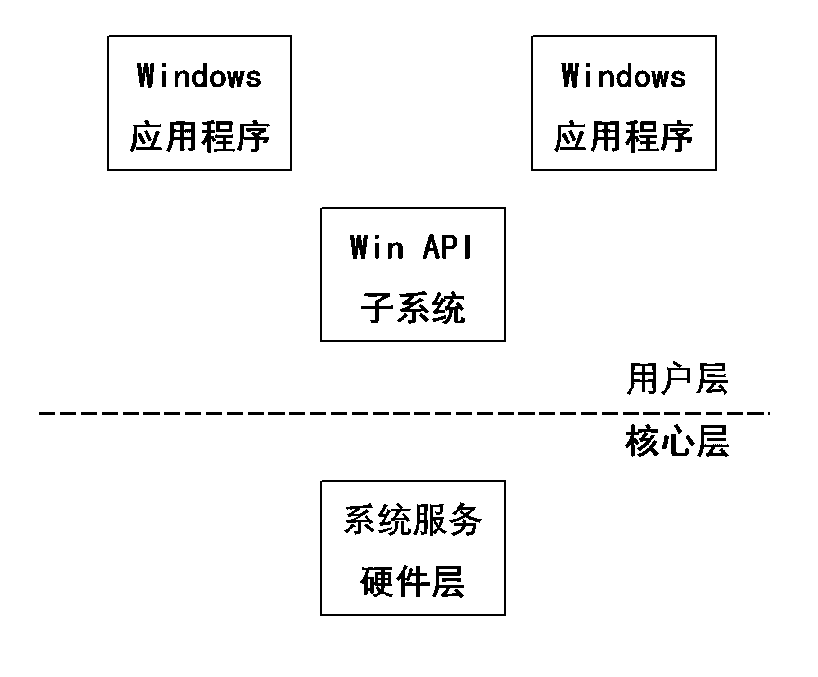
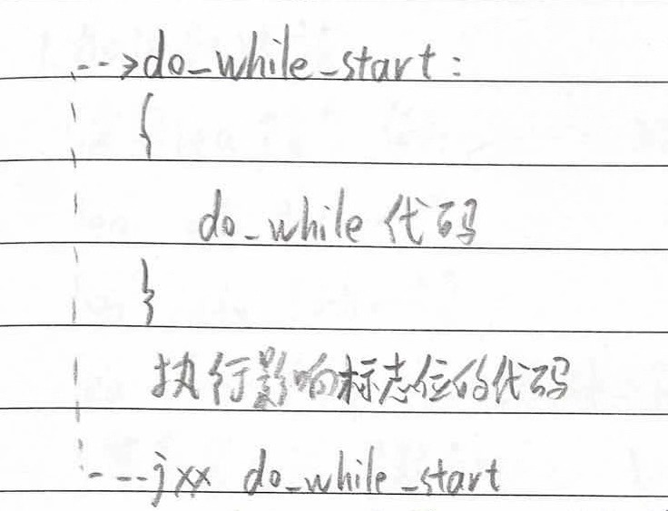
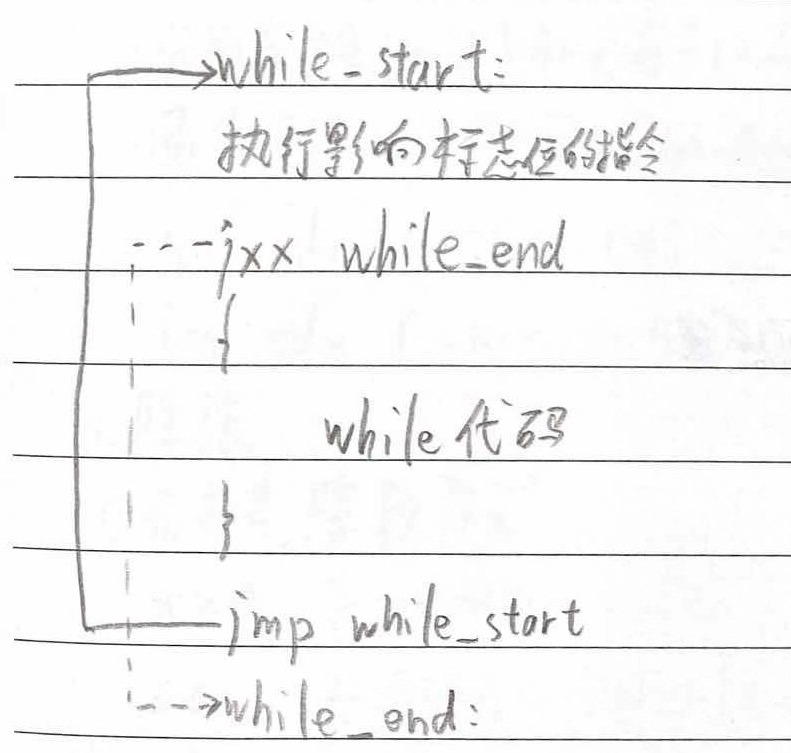
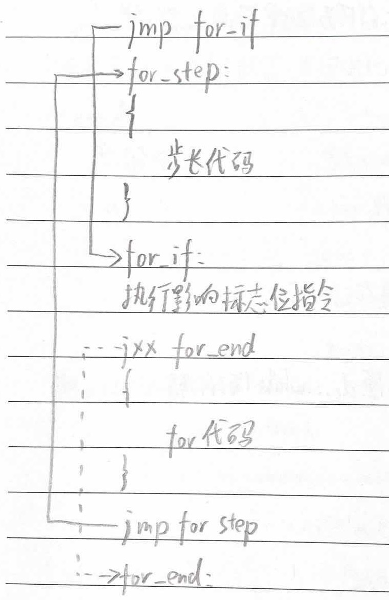
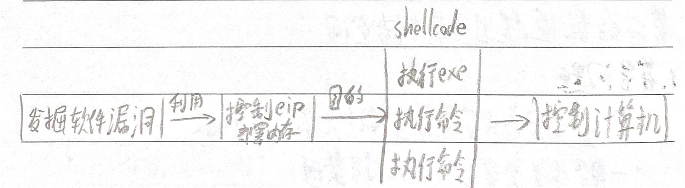

《加密与解密》
1.2 文本字符
- ASCII码是一个7位的编码标准 00h-7Fh
- 不同厂商进行了扩充，增加了128个字符，它们在127以上是不统一的 00h-FFh
- 例如ANSI、Symbol、OEM等，其中ANSI是系统预设的标准格式
- Unicode 占用两个字节，又叫宽字符集 0-65535
- 所有7位ASCII码都被扩充为16位，高位填充0
- 例如”pediy”的ACSII码（上）和Unicode码（下）：
| 70h | 65h | 64h | 69h | 79h |
|---|---|---|---|---|
| 0070h | 0065h | 0064h | 0069h | 0079h |
- 在内存中按小端序(Little-endian)存放
| 低 | 高 | ||||||||
|---|---|---|---|---|---|---|---|---|---|
| 70 | 00 | 65 | 00 | 64 | 00 | 69 | 00 | 79 | 00 |
字节存储顺序
大端序(Big-endian)
- 高字节存入低地址，低字节存入高地址
小端序(Little-endian)
- 低字节存入低地址，高字节存入高地址
例：将12345678h写入1000h开始的内存
| Big-endian | Little-endian | ||
|---|---|---|---|
| 12h | 1000h | 78h | 1000h |
| 34h | 1001h | 56h | 1001h |
| 56h | 1002h | 34h | 1002h |
| 78h | 1003h | 12h | 1003h |
| …… | 1004h | …… | 1004h |
一般来说，x86系列CPU都是Little-endian；PowerPC通常是Big-endian
1.3.1 Win32 API函数
- API(Application Programming Interface)应用程序编程接口
- API函数提供应用程序运行所需要的窗口管理，图形设备接口、内存管理等服务功能
- Win API子系统负责将API调用转换成Windows操作系统的系统服务调用

- 在Win32 API函数字符集中，”A”表示ANSI，”W”表示Widechars（即Unicode）
- 例如MessgaeBox函数有两个入口：”MessageBoxA”（ANSI版）和”MessageBoxW”（宽字符版）
虚拟内存
分析TraceMe.exe
- 右键—查找—当前模块中的名称（标签）或直接Ctrl+N获取TraceMe.exe的API名称表
- 获取文本框中的文本一般使用GetWindowText或GetDlgItemText函数，找到GetDlgItemTextA函数后设置断点。
- 开始调试分析，可以看出程序调用了两次该函数（获取用户名和序列号）
- 之后有两次判断（判断用户名长度）
- 最后调用了一个函数（计算序列号）并判断结果
lea eax,[esp+A0] ;将esp+A0存入eax中（作为一个地址）
imul edx,ebx ;edx=edx*ebx寄存器ZF（即Z）可控制是否跳转
参考网页：
https://blog.csdn.net/lw001x/article/details/7694626（汇编lea指令）
https://blog.csdn.net/qingshenxue/article/details/6210169（汇编imul指令）
2.1.4 常用断点
INT3断点、硬件断点、内存断点、消息断点等
1、INT3断点
- 本质是将断点处的地址用”CC”替换
- F2设置的就是这种断点
- 优点是可以设置无数个，缺点是改变了原程序机器码
- 一些软件会检测API首地址是否为0xCC
2、硬件断点
- 与DRx调试器有关(DR0-DR7)
- 使用DR0-DR3设定地址，使用DR7设定状态，最多4个
- 设断点：右键—断点—硬件执行
- 删断点：调试—硬件断点
3、内存断点
- 内存访问断点/内存写入断点，对所设地址赋予不可访问/不可写属性
- 会降低执行速度，因此只允许下1个
- 设断点：右键—断点—内存写入
- 删断点：右键—断点—删除内存断点
- 硬件断点可以实现相同效果：右键—断点—硬件写入—Dword （但会在下一条指令处断）
4、内存访问一次性断点
- 按Alt+M显示内存，在相应段上右键—在访问上设置断点（或直接F2）
- 是一次性的断点
5、消息断点
- 某个特定窗口函数接收到某个特定消息时，程序中断
- 只有在窗口被创建之后才能设置
- 查看—窗口 或工具栏W按钮，如果没有内容就刷新
- 右键—在ClassProc上设置消息断点—选择消息种类
- 成功中断后，处于系统底层代码中，Alt+F9和Ctrl+F9没用
- Alt+M，对”.text”区块下内存访问断点(F2)再F9就回到了程序中，这里是消息循环处
- Alt+B进入断点窗口可将其删除
6、条件断点
- 带有条件表达式的INT3断点
按寄存器条件中断
- 在下断点处按Shift+F2，输入表达式
按存储器条件中断
- 在函数第一行按Shift+F2，输入[STRING[esp+4]]==”xxx”
- STRING前缀：以零结尾的ASCII字符串（是Unicode的话把”STRING”改为”UNICODE”）
- [esp+4]是第一个参数的内存地址
7、条件记录断点
- 具有条件断点的作用，还能记录断点处函数表达式或参数的值
- 也可以设置通过断点的次数
- 在函数第1行按Shift+F4
- “条件”输入要设置的表达式
- “说明”设置一个名称
- “表达式”要记录的内容
- 下边的文本框可以输入指令，如”.d esp”（注意指令前有”.”），断下时会执行”d esp”，可以在数据窗口中看到esp地址处的数据
栈窗口查看相对地址
在栈窗口右键—地址—相对于ESP/EBP
2.1.6 Run trace
- 可以把被调试程序执行过的指令保存下来
- 调试—打开或清除Run跟踪（运行Run trace）
- 查看—Run跟踪（打开Run trace窗口）
2.1.7 Hit trace
- 能够让调试者辨别那一部分代码被执行了，哪一部分没有
2.1.10 常见问题
1 乱码问题
- 将代码当成了数据，没有进行反汇编识别
- 右键—分析—分析代码 或 Ctrl+A
- 如果还是无法识别：右键—分析—从模块中删除分析 或 在UDD目录中删除相应的UDD文件
2 快速回到当前程序领空
- 翻页到了其他地方
- 双击寄存器面板中的EIP 或 单击”C”按钮
3 修改EIP
- 光标移到要修改的地址，右键—在此处新建EIP 或 Ctrl+*
4 UDD
5 删除了的断点，OllyDbg重新加载时又出现
- 将配置文件ollydbg.ini中的相应内容改成”Backup UDD files=1”
6 在反汇编窗口输入”push E000”会提示未知标识符
- 不能识别E是字母还是数字
- 在前面加一个0，即”push 0E000”
7 OllyDbg出现“假死”现象
- 调试加壳程序，运行到断点时出现“假死”现象
- 打开配置文件ollydbg.ini，如果”Restore windows”是一个很大的值，就设置”Restore windows 0”
8 微调窗口显示
- “Ctrl+↑”或”Ctrl+↓”
9 执行复制到可执行文件时错误
10 把call调用改成函数名的形式
- 例如”call 401496”，401496h处是amsg_exit函数
- 将光标停在该处，按”Shift+;”，在弹出的标签框中输入”amsg_exit”
- 所有调用401496h处的call指令都会变成”call
“
3.1 文件类型分析
- PEiD、Exeinfo等文件分析工具
一些快捷键
| 快捷键 | 含义 |
|---|---|
| Ctrl+滚轮 | 在图形界面调整图形大小 |
| G | 打开”Jump to address”窗口 |
| Esc | 后退 |
| Ctrl+Enter | 前进 |
| X | 打开交叉参考窗口 |
| N | 打开更名对话框 |
| Ctrl+M | 跳转到标记位置（Jump→Mark position 标记当前位置） |
| C | 将某段十六进制数据定义为指令 |
| P | 将某段代码定义为子程序 |
| U | 取消 |
| D | 数据类型在db,dw,dd之间转换（Options→Setup data types 设置更多数据类型） |
| A | 将某段十六进制数据定义为C语言字符串（Options→ASCII string style 设置更多字符串种类） |
| Shift+F11 | 打开加载类型库窗口 |
| T | 重新定义结构体数据 |
有些程序可能对一部分程序进行了加密，运行时需要先将其解密。例如有一个函数的内容经过了加密，另一个函数的功能就是对其进行解密，那么在调用该函数前要先调用解密函数。
一些快捷键
IDA也可以动态调试
| 快捷键 | 功能 |
|---|---|
| F7 | 单步步进 |
| F8 | 单步步过 |
| F4 | 运行到光标所在行 |
| Ctrl+F7 | 运行到该函数返回 |
| F9 | 运行 |
| Ctrl+F2 | 终止一个正在运行的进程 |
| F2 | 设置断点 |
远程调试
修改程序
32位
启动函数
启动代码执行完后才调用WinMain函数
函数的参数
利用栈传递、利用寄存器传递、通过全局变量进行隐含参数传递
函数的返回值
- 一般放在eax寄存器中
- 如果大小超过eax寄存器的容量，高32位放到edx寄存器中
- 除直接传值外还可以传引用
局部变量
- 函数内部定义的变量
- 用sub esp,8为局部变量分配空间
- 函数退出时用add esp,8平衡栈
- 也可以用push ecx和pop ecx来替代sub esp,8和add esp,8

全局变量
- 存放在全局变量的内存区中
- 常数一般放在全局变量中
- 通常位于数据区块(.data)的一个固定地址处
- 一般编译器会将全局变量放到可读写区块中，如果放到只读区块中就是一个常量
数组

虚函数
- 虚函数是程序运行时定义的函数
- 虚函数的地址不能在编译时确定，只能在调用即将进行时确定
虚函数表
一个数组，存放虚函数的地址
控制语句
cmp oprd1,oprd2 用前一个减后一个，但不影响这两个值
| 标志位 | 结果 |
|---|---|
| ZF=1 | 两个数相等（结果为零时ZF=1） |
| 无符号时 | |
| CF=1 | 有借位 oprd1<oprd2 |
| CF=0 | 无借位 oprd1>oprd2 |
| 有符号时 | |
| SF=0 OF=0 | 值为正数 oprd1>oprd2 |
| SF=1 OF=0 | 值为负数 oprd1<oprd2 |
| SF=0 OF=1 | 值为正数，有溢出 oprd1<oprd2 |
| SF=1 OF=1 | 值为负数，有溢出 oprd1>oprd2 |
转移指令的条件与机器码
| 转移类别 | 标志位 | 含义 | 短转移机器码 | 长转移机器码 |
|---|---|---|---|---|
| CALL | – | call调用指令 | E8xxxxxxxx | E8xxxxxxxx |
| JMP | – | 无条件转移 | EBxx | E9xxxxxxxx |
| JO | OF=1 | 溢出 | 70xx | 0F80xxxxxxxx |
| JNO | OF=0 | 无溢出 | 71xx | 0F81xxxxxxxx |
| JB/JC/JNAE | CF=1 | 低于/进位/不高于等于 | 72xx | 0F82xxxxxxxx |
| JNB/JNC/JAE | CF=0 | 不低于/无进位/高于等于 | 73xx | 0F83xxxxxxxx |
| JE/JZ | ZF=1 | 相等/等于零 | 74xx | 0F84xxxxxxxx |
| JNE/JNZ | ZF=0 | 不相等/不等于零 | 75xx | 0F85xxxxxxxx |
| JBE/JNA | CF=1或ZF=1 | 低于等于/不高于 | 76xx | 0F86xxxxxxxx |
| JNBE/JA | CF=0且ZF=0 | 不低于等于/高于 | 77xx | 0F87xxxxxxxx |
| JS | SF=1 | 符号为负 | 78xx | 0F88xxxxxxxx |
| JNS | SF=0 | 符号为正 | 79xx | 0F89xxxxxxxx |
| JP/JPE | PF=1 | “1”的个数为偶数 | 7Axx | 0F8Axxxxxxxx |
| JNP/JPO | PF=0 | “1”的个数为奇数 | 7Bxx | 0F8Bxxxxxxxx |
| JL/JNGE | SF!=OF | 小于/不大于等于 | 7Cxx | 0F8Cxxxxxxxx |
| JNL/JGE | SF=OF | 不小于/大于等于 | 7Dxx | 0F8Dxxxxxxxx |
| JLE/JNG | SF!=OF或ZF=1 | 小于等于/不大于 | 7Exx | 0F8Exxxxxxxx |
| JNLE/JG | SF=OF且ZF=0 | 不小于等于/大于 | 7Fxx | 0F8Fxxxxxxxx |
条件设置指令
- 形式是SETcc r/m8
- 其中r/m8表示8位寄存器或单字节内存单元
- 条件设置指令根据处理器定义的16种条件测试一些标志位，条件满足时，目标操作数置1，否则置0
- 条件与转移指令相同
利用算数操作替代转移指令
循环语句
与其他分支语句最大的区别在于是向后跳转的
用lea指令代替add和sub
lea edx,dword ptr[ecx+eax+78]- 只有在都是寄存器的情况下才有效
- 寄存器在前面，常数在后面
计算乘法若有一个乘数是2的幂则会用左移
例如eax*5可以写成
lea eax,[eax+4*eax]除法用乘法代替
文本字符串
1、C字符串：以”\0”为结束标志
P E D I Y \0
2、DOS字符串：以”$”为结束标志
P E D I Y $
3、PASCAL字符串：无终止符，但在开头定义长度
不超过255个字符
5 P E D I Y
4、Delphi字符串
双字节Delphi字符串：表示长度的字段扩展为2字节
不超过255个字符
5 0 P E D I Y
四字节Delphi字符串：表示长度的字段扩展为4字节
长度达到4GB
字符寻址指令
mov eax,[401000h] ;直接寻址，把地址为00401000h的数据放入eax
mov eax,[ecx] ;寄存器间接寻址，把ecx中的地址所指的内容放入eax
lea eax,[401000h] ;装入有效地址(Load Effective Address)，将401000h写入eax计算索引和常量的和时，一般将指针放在第一个，例如
mov dword ptr[eax+b],67452301字母大小写转换
大写字母 41h-5Ah
小写字母 61h-7Ah
转换方式就是将原ASCII码加/减20h
指令修改
见P131表格
因为很多指令针对eax寄存器进行了优化，所以尽量使用eax寄存器
64位
寄存器
- x64系统通用寄存器的名称，第一个字母从E变为R
- 大小扩展到64位
- 数量增加了8个(R8-R15)
- 与x86下的32位寄存器兼容，例如：RAX(64位)、EAX(低32位)
- 使用DWORD、WORD、BYTE后缀，例如：R8(64位)、R8D(低32位)、R8W(低16位)、R8B(低8位)
栈平衡
函数调用完成时，要保证栈顶与函数调用前的位置一致
调用约定
- 前四个参数使用寄存器传递，多余的参数放在栈中
- 入栈顺序为从右到左
- 由调用方平衡栈
- 第一个参数RCX，第二个参数RDX，第三个参数R8，第四个参数R9
- 大于8字节或不是1、2、4、8字节的参数由引用传递
- 浮点参数由XMM寄存器完成传递(XMM0-XMM3)
- 栈仍然为这4个参数预留了空间，当函数寄存器不够用时，可以把寄存器的值保存到栈空间中
参数为结构体且小于8字节
- 把整个结构体的内容放在寄存器中
- 在函数中通过访问高32位和低32位来分别访问结构体成员
参数为结构体且大于8字节
- 把内容复制到栈中，再把结构体地址作为参数
- 在函数中通过“结构体地址+偏移”的方式访问结构体内容
thiscall传递
- 类的成员函数调用、参数传递方式与普通函数没有很大区别
- 会银行的传递一个this指针参数
返回值
- 用RAX寄存器来保存
- 大于8字节时可以用地址
局部变量
- 与32位基本相同
- 编译为Release版本时，编译器会尽可能用寄存器来存放局部变量
全局变量
- 同32位
数组
占用内存大小为：sizeof(类型)*个数
数组寻址公式
数组元素地址=数组首地址+sizeof(数组类型)*下标
多维数组可以看作是元素类型为数组的一维数组
[数组首地址+n]
[数组首地址+寄存器*n]
如果遇到以上特征，就可以怀疑为一个数组访问
条件控制语句
虚线箭头表示条件跳转
实线箭头表示无条件跳转

switch-case
- 分支数小于6时直接用if……else语句来实现
- 分支数大于等于6时会进行优化
- 有case表和判定树两种优化方式
判定表
| 数组下标 | 数组内容 |
|---|---|
| 0 | case1 语句块代码偏移 |
| 1 | case2 语句块代码偏移 |
| 2 | case3 语句块代码偏移 |
| …… | …… |
判定树

循环
循环语句与if语句最大的区别就是有向上（后）跳转
1、do…while循环

不用取反即可还原do…while循环代码
2、while循环

把jxx取反即可还原
3、for循环

把jxx取反即可还原
数学运算符
主要讨论Release版本中编译器优化后的四则运算
1、加法和减法
- 使用lea指令，例如
lea edx,[rcx+3]
lea edx,[rbx-5]
lea edx,[rbx+rbx+4]- 寄存器在前，常数在后
- 若有多个常数，则在编译期间计算好结果（常量折叠）
2、乘法
- 分为有符号(imul)和无符号(mul)两种
- 通常使用lea比例因子寻址来优化指令，例
lea edx,ds:0[rcx*4]
lea edx,[rbx+rbx*8]3、除法
分为六种情况：
- 有符号，除数为2^n
- 有符号，除数为-2^n
- 有符号，除数为正，非2^n
- 有符号，除数为负，非2^n
- 无符号，除数为2^n
- 无符号，除数非2^n
除数为2^n时很简单
除数非2^n时较复杂，并没有完全弄懂
4、整数的取模
除数为2^n
优化公式1：
x>=0: x%2^n=x&(2^n-1)
x<0: (x&(2^n-1))-1|(~(2^n-1))+1
优化公式2：
x>=0: x%2^n=x&(2^n-1)
x<0: ((x+(2^n-1))&(2^n-1))-(2^n-1)
除数非2^n
一般采用： 余数=被除数-商*除数
虚函数
- 如果一个类至少有一个虚函数，这个类就有一个指向虚表的指针
- 不同的类虚表不同，相同的类对象共享一个虚表
- 虚表指针存放在对象首地址处

菱形继承
- 两个子类继承同一个父类，又有子类同时继承这两个子类
- 一般使用虚函数继承
- 如果发现构造函数的参数多传递了一个，就可以怀疑这个类继承层次带有虚继承
- 如果是虚继承，就不再与基类共享一个虚表，会增加一个虚表


抽象类虚表
- 含有纯虚函数的类称为抽象类
- 抽象类虚函数的最大特点是没有实现代码
- 父类为抽象类的实现代码与单重继承没有太大区别
- 唯一的区别在于虚表
- 由于纯虚函数没有实现代码，编译器默认填充了_purecall函数的地址
- _purecall函数的功能就是显示一个错误信息并退出程序
- _purecall函数可以作为识别抽象类的一个依据
第14章 漏洞分析技术
缓冲区溢出、UAF(Use-After-Free)等涉及二进制编码的漏洞统称为二进制漏洞
本章部分内容放到对应的部分单独讲
shellcode
一段可以独立执行的代码

漏洞样本
一般分为两类：一类是证明软件有漏洞，叫PoC(Proof of Concept)；另一类是漏洞利用样本，叫做Exp(Exploit)
主要讨论Exp
1、可执行文件
直接利用exe程序触发漏洞的执行，从而实现提权或远程溢出的目的
2、文档类
没有执行的功能，当存在漏洞的应用程序打开此类样本时，会触发应用程序漏洞，实现执行shellcode的目的
- 浏览器类：*.html *.htm 等，主要用于触发浏览器漏洞
- 办公文档类：*.pdf *.doc *.rtf *.xls *.ppt *.pps *.mdb等，主要用于触发Office系列应用程序漏洞